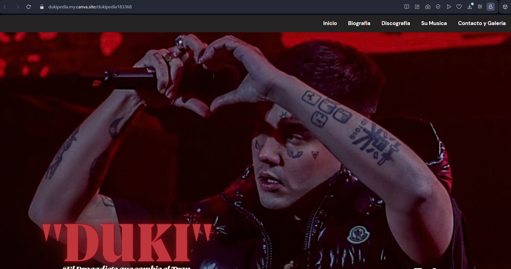
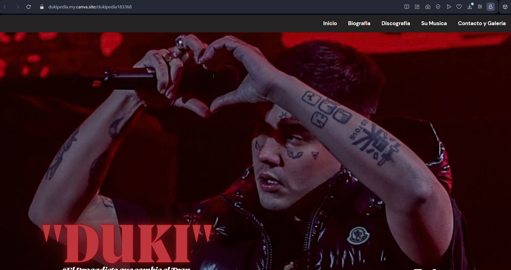

A lo largo de este parcial realizamos diversas practicas centradas principalmente en la estructura principal de html, sin incluir a fondo css. Además de algunos retos para reforzar dichas practicas, culminando en un examen practico que incluia todo lo aprendido en este semestre.
 
